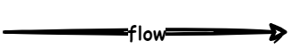
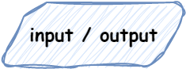
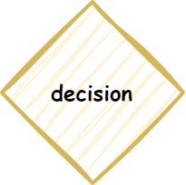
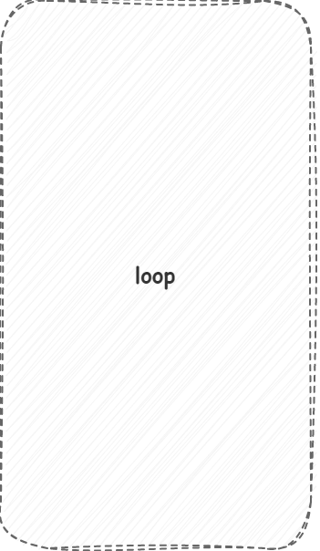
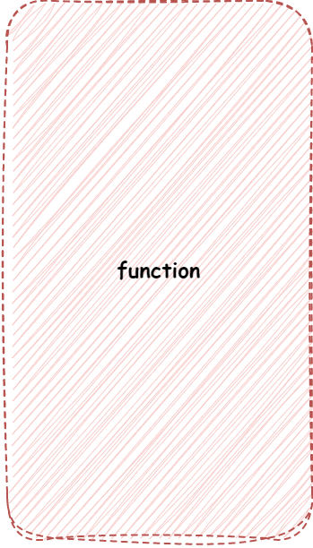
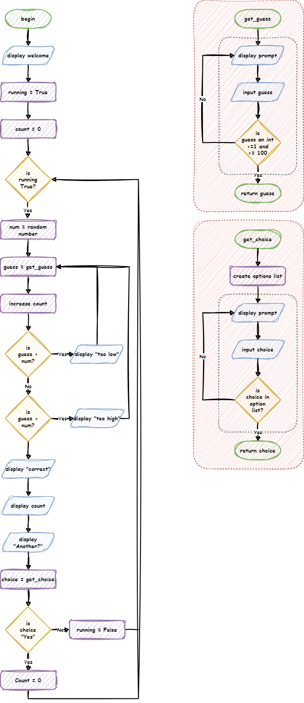

Flowcharts#
A flowchart is a type of diagram that uses different types of boxes and arrows to show the steps in a process or how to solve a problem. In programming we use flowcharts to map out algorithms.
Symbols#
The different boxes have meanings in a flowchart. Each represent different processes in our program.
Flow arrows#

Flow arrows represent the path the program take through the flowchart. Flows only go in one direction, as indicated by the arrow head.
Process blocks#
Process blocks contain all the internal sequential commands of your code.
For example:
assigning variables
performing calculations
calling functions
They are represented using a rectangle with with the description inside.
Flows:
inflow arrows - must have at least one, but can have many.
outflow arrows - must have one and can only have one.
Terminal blocks#
Terminal blocks start and end a process.
They are represented using a rounded rectangle. If starting or ending a main program, they contain the words “Start” or “End”. If starting or ending a function, they contain the name of the functions or the return value.
Flows:
start terminal inflow arrows - can only have none
start terminal outflow arrows - must have one and can only have one
end terminal inflow arrows - must have one and can only have one
end terminal outflow arrows - can only have none
Input/Output (IO) blocks#

IO blocks involved the transfer of information between the real world and the program.
Input is when information is entered into the program and can involve:
typing
mouse actions
gamepad or joystick actions
camera recording
microphones recording
Output is when the computer renders information for the outside world and can involved:
displaying images and text on screen
creating sound
haptic vibrations
printing on paper
Input / output blocks are represented using parallelograms, with text explaining what is being inputted or outputted.
Flows:
inflow arrows - must have at least one, but can have many.
outflow arrows - must have one and can only have one.
Decision blocks#

Decision blocks ask a question and then split the flow according to the answer.
They are represented with a diamond, with the question being tested.
Decision blocks are the only block that can have multiple outflow arrows. Each outflow arrow should be labelled with the answer that will lead down it’s path.
Flows:
inflows - must have one and can only have one
outflows - must have one, but can have many
Additional symbols#
Throughout this course we have used two additional symbols to help visualise how the flowcharts run:
Loop indicator
Function indicator
You are not expected to use these symbols, but you are welcomed to use them to make your flowcharts more readable.
Loop indicator#

The loop indicator is a grey box with dashed lines. It surrounds a loop, and will either start or end with the loop condition’s decision block.
Function indicator#

The function indicator is a red box with dashed lines. It surrounds a function, with the functions starting terminal at the top and end terminal at the bottom. No flow arrows should enter or exit the function indicator.
Example#
Below is a flowchart for a number guessing game.
The game requirements are:
Generate a random number between 1 and 100
Ask the user to guess the number
If the number is incorrect, it tells the user if they guessed too high or two low
If the number is correct, it tells the user how many guesses they had.
Validate user input to ensure incorrect types cannot be entered
Only accept numbers between 1 and 100
Ask the user to play again
